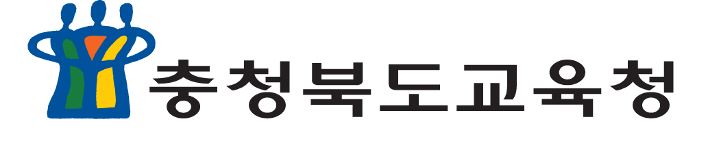
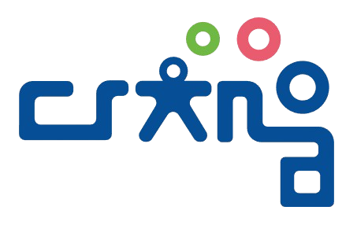

일정 목록
각자 맡은 세트 수를 입력하세요. 입력하면 바로 저장됩니다. 2차 검토는 아직 정해지지 않아 입력할 수 없습니다.
코드를 누르면 성취기준·해설·성취수준(A~E)을 볼 수 있습니다. 출처: 2022 개정 사회과 교육과정(교육부 고시 제2022-33호 [별책 7]), 성취수준은 KICE 「2022 개정 교육과정에 따른 고등학교 사회과 공통과목 성취수준 개발 연구」(CRC 2024-23) 부록 본표.


각자 맡은 세트 수를 입력하세요. 입력하면 바로 저장됩니다. 2차 검토는 아직 정해지지 않아 입력할 수 없습니다.
코드를 누르면 성취기준·해설·성취수준(A~E)을 볼 수 있습니다. 출처: 2022 개정 사회과 교육과정(교육부 고시 제2022-33호 [별책 7]), 성취수준은 KICE 「2022 개정 교육과정에 따른 고등학교 사회과 공통과목 성취수준 개발 연구」(CRC 2024-23) 부록 본표.